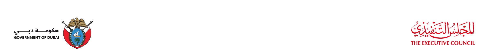

مشروع خاص توضيحي 025
دائرة المالية
قيد التطويرنسبة الإنجاز المسجلة
70%
- القطاع
- الحوكمة
- الإدارة
- الحوكمة
- مشاريع القيادة
- لا
- إدارات مساهمة
- اللجنة التوجيهية لنظام الأداء

الأمانة العامة للمجلس التنفيذي
حتى تاريخ 30/09/2026
حتى تاريخ 30/09/2026 · النطاق: الكل · الإجمالي: 62
عينة للمراجعة من بيانات توضيحية
دائرة المالية
تظهر القيمة الصفرية بشرطة.
يبقى الحقل فارغاً.
العنوان والعدد باللون المعتمد؛ العدد داخل الشريط واضح.